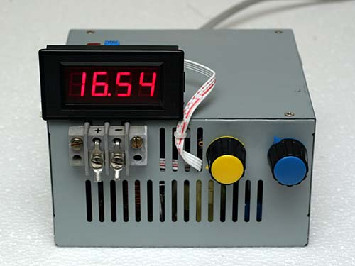
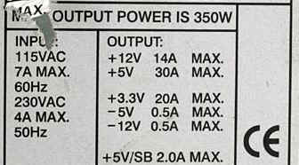
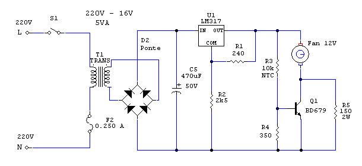
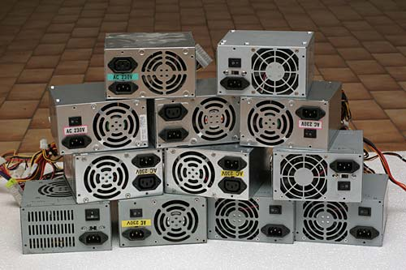

Power supplies
SWITCHING POWER SUPPLY ATX (2009)
How to build a lab SPS. How to Convert a Computer ATX Power Supply to a Laboratory Power Supply From 0.1 V to 16 V (30 V) and from 0.15 A to 16 A (30 A) "Electronics design" by R. Chirio
Page index
2008-2013
After the switching power supply of a TV, the ATX power supply is certainly the most widely distributed switching power supply electronic product in the world, millions of pieces have been produced in the last 10 years.
The average lifespan of a PC does not exceed 3-5 years, so there are many PCs that are scrapped or upgraded, and a component that is often replaced even if it still works is the ATX power supply, replaced by a more powerful model.
As is known, the ATX power supply serves to convert 220V alternating energy to direct current, isolated from the mains and of low value such as 3.3V 5V and 12V, voltages necessary for the operation of microprocessor boards.
For use in an electronics lab most of the time you need to have continuously adjustable voltage values, to perform all the necessary tests. A power supply with such features is expensive, especially if it can also deliver 20A.
With relative simplicity it is possible to modify an ATX to vary the output voltage and also to limit and regulate the current.
Let us say right away that the 220V input section must not be touched or modified. Modifications must be made only on the secondary circuit as indicated. Opening the ATX cover the 220V power must never be connected, and before reconnecting it always put back and screw on the metal cover.
The modification of the Switching Power Supply ATX requires good knowledge of electronics,
equipment and experience in electronic assembly is required.
And clear expertise in the use of 220V devices.
No liability is accepted for damage to things and people and for improper use of the implementation.

350W ATX modified to make it a lab power supply; on the right the potentiometer (blue knob) for adjusting output voltage from 1 to 15V (20V in this case) and the yellow potentiometer for adjusting current from 0.15 to 15A. The voltage is read with a digital LED voltmeter powered by the internal section called +5V StandBy which has not been modified.
With models over 450W, and depending on the type of ATX recovered, it is possible to achieve 20V 20A or even 30V 12A at the output, as a precaution the less powerful model will be described how to make.
Before you start modifying the ATX it is necessary to identify the most suitable model for implementation, the proposed modified schematic works with most ATX units that contain the TL494 regulator or the equivalent KA7500.
Driver integrated circuits type 2003, 2005, SG6105, are not suitable for making a variable Power Supply.
With the UC3843 can be done but the circuit proposed on this page is not suitable.
PWM driver:
(download PDF Data Sheet)
{kind=link}
The TL494 IC is found in ATX power supplies built in China from 1997 to present day; even as power ratings increase, the driver remains the same; besides, it has good characteristics allowing use in ATX supplies from 200W to 600W. What changes inside the power supply is the rating of components such as the ferrite transformer, transistors, MOSFETs and power diodes as well as the value of the filter capacitors.
From model to model the configurations of the Power Good circuit and the OverVoltage circuit change, this is not a problem, since those circuits don't concern us because they must be isolated and disconnected, see the breaks in the general diagram.
Before starting the build it's good to test the ATX in operation, and make sure it works under load. In this case you need to jumper the green cable (PS-ON) to ground, present on pin 14 of the main connector, and then supply mains power.
If OK you will hear the fan spin.
Caution the fact that the fan is running is a good sign but it does not mean that the power section is working, you must measure the output voltages by connecting a load.
Measure the voltage on the white connectors and verify 5V (+/- 0.5V) between the red wire and the black wire, and then 12V between the yellow wire and the black wire. To test operation under load, connect a 20W 10 ohm power resistor across the 12V terminals and verify that the voltage does not drop below 11.80V. A 20W 12V lamp also works, provided it is not rated higher, otherwise the inrush current will lock up the ATX.
Leave the load connected for a while and check that there are no voltage drops or fan blockage or overheating.
A noisy fan, if any, should be replaced with a new one, if it were to jam during operation under load, in many ATX units without thermal protection overtemperature damage could easily occur.


To know the maximum current it can deliver, it is enough to read the value on the ATX nameplate.
In this case with the 12V the maximum current draw is 14A.
With no loads on the other outputs, it is reasonable to think that from the 12V you can draw a higher current. From 15 to 20A for periods not exceeding 15 minutes.
We can find 480-500W power supplies that provide 18-22A from 12V.

We can find many ATX diagrams on this website: http://danyk.cz/s_atx_en.html
ELECTRICAL CIRCUIT DIAGRAM ATX 200W
Diagram of a 200W ATX recovered from the net. (Note that the original diagram has some errors. )
Highlighted in red are the points where to isolate the connections and in green the components to remove.
The basic circuit is always similar, the PowerGood and Overvoltage circuits change (which we won't use and will isolate) moreover with different powers, the power components will change.
Identify the components to replace around the TL494 starting from the pins of the PWM regulator itself.
{kind=link}
ATX CIRCUIT DIAGRAM for voltage and current control modifications.
{kind=link}
(Version 2011/03)
Diagram of modifications to be made to the components around the TL494 regulator to achieve up to 30A output.
With this circuit there is better stability and precision in regulation.
Minimum adjustable voltage and maximum dropout are less than 0.10V
For the general circuit, refer to the two versions published further on.
R3 is the potentiometer that adjusts the current, R17 is the potentiometer that adjusts the voltage, for greater accuracy they should be 10-turn wirewound.
This is the most stable circuit, suitable for the various currents available depending on the ATX chosen. Use the value of R11 depending on the maximum current available at the output.
The pins refer to the TL494 IC soldered on the printed circuit board. For convenience, pins 15 and 16 must be isolated from the original schematic; the IC can be desoldered and before inserting it again, bend pins 15 and 16 upward, thus avoiding interrupting the CS traces.
Resistors R1, R4, R9 and R15 must be 2% metal-film type, while R11 must be a 10W wirewound power resistor. The value must be chosen according to the maximum obtainable output current. The thermal stability of the current value depends on the quality of the resistor used. Position R11 as much as possible in the airflow of the fan.
The resistor R11, capacitor C5 and the two potentiometers R3 and R17 must be placed outside the printed circuit board.
R10 is used to calibrate the maximum full-scale value for voltage (for example 16.0V compensating for potentiometer tolerances).
R16 is used to calibrate the maximum full-scale value for current (for example 16.0A compensating for potentiometer tolerances).
The inductances L1 and L2 are the originals present on the CS, verify that they can hold up to 30A.
Capacitors C3 and C4 replace the original 1000uF 16V ones, insufficient to withstand overvoltages and higher current.
The RC group C6 R12 serves to provide stability to the regulation, eliminating return noise on the output terminals for voltages greater than 9-10V.
The CS traces that bring the negative to ground must be isolated, instead connect a 0.1uF 400V capacitor, to avoid ground return on current regulation.
ATX 300/500W modifications for output from 0.6V to 20V and current from 0.15 to 20A
Complete diagram of the modifications, eliminating the unused parts.
In red the new connections and components.
To connect the fan use the recommended diagram further ahead, using a separate transformer.
{kind=link}
ATX 300/500W modifications for output from 0.6V to 30V and current from 0.1 to 12A
Complete diagram of the modifications, eliminating the unused parts.
It is necessary to introduce a new rectifier bridge at the output, positioned on a new isolated heatsink.
Eliminate the ground connection on the transformer output.
To connect the fan use the recommended diagram further ahead, using a separate transformer.
{kind=link}
Realization
The realization of the Switching Power Supply involves having knowledge of electronics, equipment and experience in electronic assembly are necessary.
And clear expertise in the use of 220V devices.
No liability is accepted for damage to things and people and for improper use of the implementation.
Photo Version 2007
- Start by removing the CS from the metal container, unsolder the mains cables and unscrew the 4 fastening screws.
- With a robust soldering iron disconnect all soldered cables on the CS, leave only the green PS-ON cable and the Purple 5VSB cable.
- Disconnect unnecessary components from the various +5v and +3.3V sections and also the various resistors that will be replaced with new values.
{kind=link}
350W board ready for modifications.
{kind=link}
View of the interior after assembly completed.
{kind=link}
View of the interior after assembly completed.
- Use at least 4 original cables for the power outputs, red for the positive directly to the output terminal. Black for the connection to the R11 Current Sensing resistor and from the resistor to the negative terminal.
- Note the large 35V capacitors substituted for the original 16V ones, which are not suitable for withstanding higher voltages. If you build the 12V battery charger, we can keep the original 16V capacitors since they would only work at 14.50V.
{kind=link}
{kind=link}
- The white flat cable is for powering the digital voltmeter to be placed outside the container. (There's no room inside.)
- The output terminal strip must be of 30A type so as to be able to fix 4/6mmq cables equipped with ferrule.
- The 12V fan can no longer be connected as originally on the output outlet, in this case we will take positive power from pin 12 (+18V) of the TL494 and negative from the common negative. With a 7812 regulator we stabilize the power supply of the fan. The regulator does not need a dissipator, in this case it is fixed with a screw directly to the fan. (Verify the voltage upstream of the regulator that under normal conditions, that is with the fan running does not drop below 17V, otherwise use the solution with separate transformer explained below.)
- Detail on the current sensing resistor R11, made of constantan wire and attached to the 30A terminal block. The resistor is directly cooled by the air flow drawn by the fan, this keeps the temperature low we will therefore have a reduced drift of the values with increasing current.
R11 can also be easily made with the parallel of n 3/5W resistors in parallel.
You can see the two 10-turn precision potentiometers, keep the connecting cables as short as possible, close to the metal of the container and away from the transformers, this to avoid interference.
{kind=link}
{kind=link}
- You can see the resistors soldered directly on pins 13,14 and 16 and the two resistors on the CS in place of R25 and R31 which represent the new 1.0V reference for voltage control. (2007 Version)
Temperature controlled ventilation.
Connecting the fan to the primary flyback circuit, as described above in the main schematic, in many cases reduces drive efficiency at maximum output current conditions. To cool the modified ATX, it's good to use a circuit with a separate transformer.

A small 220V-12/14V 5VA transformer is used. Followed by a rectifier and filter circuit.
- The LM317 regulator allows us to precisely adjust the output voltage.
- R2 determines the maximum operating voltage on the fan normally 12V. Also 16V where strong ventilation is required.
- R5 determines the minimum fan voltage typ. 5.5V.
- R4 determines the minimum operating temperature typ.40°
By removing R5 the fan only activates when the intervention temperature is exceeded.
The NTC thermistor R3 must be fixed with silicone adhesive to the power rectifier diodes heatsink.
The values may vary depending on the fan used, it is recommended to use a better quality fan than the one usually mounted inside the ATX.
Using a transformer with 12V output it is possible to omit the LM317 regulator and connect the fan circuit directly across capacitor C5, verify that the no-load voltage is not higher than 16V.
Obviously during operation under load of our ATX, we will hear the fan operate at different speeds, depending on the temperatures reached.
{kind=link}
{kind=link}
Improvements
With a 400-500W ATX it is possible to reach 20-22V output at 20-25A by replacing the 12V double rectifier diode with the 5V one suitable for 30A, moreover you must use the 5V section of the toroidal filter inductor, more suitable for handling high currents, as well as the second inductor with larger diameter wire.
Be aware that the 30A Schottky diode, operating at 20V, is at the limit of its threshold voltage, check the voltage across it, if needed increase the RC snubber to reduce spikes, or use a 60V SBL3060PT.
Better to use two fast diodes 200V 16A one for each branch.
With these simple substitutions and adequate and efficient cooling we should be able to have 20A and more in continuous operation, the operating temperatures must always be checked, in particular of the power transformer.
{kind=link}
For the more experienced I recommend increasing the working frequency of the TL494, an increase of not more than 20% but sufficient to squeeze a bit more out of the transformer. So if the nominal frequency is 50kHz bring it to 60 kHz by acting on the R and C present on pins 6 and 5 of the TL494 driver. It is good to use an oscilloscope and/or frequency meter to read the values. After this modification it is possible to obtain an increase in maximum output power; it is necessary to mount fast diodes 16A 200V at the output.
All power connections must be carefully made, never less than 4mmq.
Check the efficiency of the fan, possibly adopt a model with greater flow rate.
The addition of a digital Voltmeter and a 20A digital Ammeter allows creating an excellent laboratory instrument. Recommended placement in a larger metal cabinet, suitable for containing all the electronic assembly with the instruments.
{kind=link}
With the same schematic it's possible to build an excellent battery charger for 12V or also for 24V simply by mounting two trimmers inside in place of the potentiometers and calibrating the output voltage to 14.5Volt (29V), the voltage corresponding to a fully charged battery.
In this case I inserted external current adjustment, from 1 to 18A, while the voltage is fixed at 14.50V.
{kind=link}
ATX failure causes
- 90% of ATX supplies are replaced after 3-4 years because they don't have sufficient inrush power following video card and motherboard upgrades, generally working ATX supplies are thrown away.
- Second cause is overheating following fan blockage, dust enters and slows or blocks the fan, so components overheat, sometimes they come off from CS, usually the electrolytic capacitors fail first.
It would be enough to open the case every 6 months and blow out and clean the dust. Good practice to keep the Tower and miniTower raised from the floor. Those who smoke a lot also contribute to blocking the fan prematurely...
- The driver rarely fails, if anything the first stage of the 5V standby that supplies power to the driver. The first stage is self-oscillating and is always under voltage and supplies a few Watts to the system to start up....
Often it is also the poor construction quality that pushes the most stressed internal components to their limit...
Final thoughts
Certainly an excellent and powerful power supply. The original design, backed by millions of units produced, is optimized, efficient and reliable. Under test conditions, 20V and 20A equal to 400W is easily reached; not suitable for continuous service, but convenient for short-duration loads.
The cost of construction can be considered very low, especially if multi-turn potentiometers and digital voltmeter are not used.
The ATX modified to 13.8V 20A was tested connected to VHF radio transmitter equipment and the background noise is negligible. Not suitable for HF as it has considerable noise. Good behavior with impulse current draws; the switching topology presents low impedance at the output.
The implementation is indicated for those who are already an expert in electronics and experienced with 220V systems.
Remember that not all ATX with TL494 driver accept the modification, therefore they might work poorly or even blow the fuse, to be tested with other models...
............................................

© Roberto Chirio: all rights reserved.